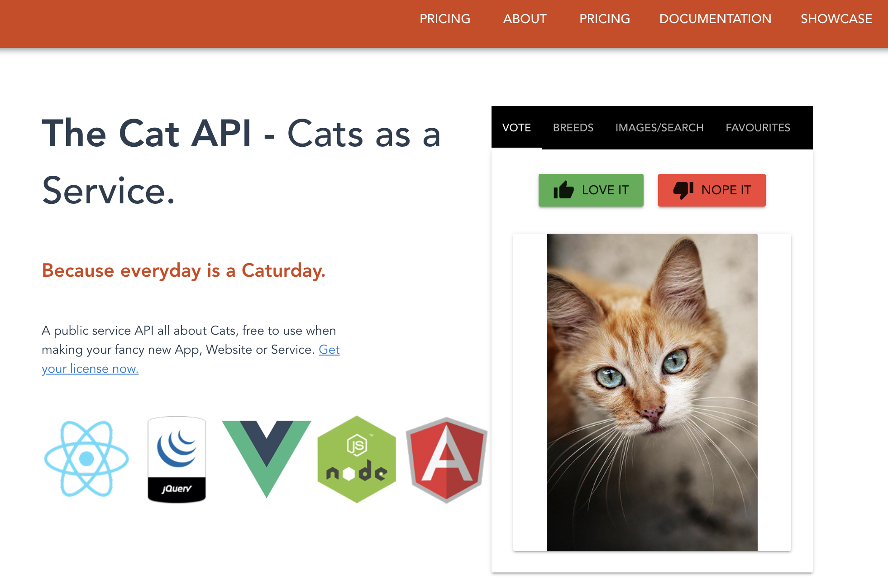

Accessing Data with API’s#
OBJECTIVES
More with
groupbyand.aggData Access via API
import pandas as pd
import numpy as np
import seaborn as sns
import matplotlib.pyplot as plt
Data Input via APIs#
This is about using an api “Application program interface” …basic idea, allows direct access to some database or parts of it without having do download everything
import os
import pandas as pd
import matplotlib.pyplot as plt
import datetime
Quick Example
Yahoo Finance has a python library that will pull data directly from the source and structure it as a DataFrame. See info here.
#pip install yfinance
import yfinance as yf
#get tsla data
tsla = yf.Ticker("TSLA")
# get historical market data
hist = tsla.history(period="1mo")
$TSLA: possibly delisted; no price data found (period=1mo)
hist.head()
| Open | High | Low | Close | Adj Close | Volume | |
|---|---|---|---|---|---|---|
| Date |
Accessing Data Without a Library#

import requests
Head over to the website here.
#getting that information using requests
#results
Response
Random Cat: https://api.thecatapi.com/v1/images/search
10 Bengal Cats: https://api.thecatapi.com/v1/images/search?limit=10&breed_ids=beng&api_key=REPLACE_ME
#url for a random cat
#request of the url
#look at response code
#text of request
#examine the json
#repeat for bengal cats
#extract the links to images
Extra Problem:
Head over to the Dog API here.
Make a request that returns a list of all dog breeds.
Make a request that returns a random image of a dog and extract the url.
Last FM#
The API for Last FM requires an API Key. Head over here to signup for yours – it should be instantaneous.
base_url = ''
#examine the response
#extract the headline
Exercise
Use the album.GetInfo method docs to get information about an album of your choosing.
API Wrappers#
Often, someone has written a library to wrap the API. For example, there is an LastFM Python API wrapper:
PROBLEM#
The LastFM API contains data about musical artists and releases. Head over to the API docs and sign up for an API Key here. Your objective is to use the artist.getSimilar endpoint docs to construct a list of artists similar to your five favorite artists. To begin, you and a partner should fill in a list of five similar artists below, and use the API to extract a list of similar artists.
five_favorites = []
new_artists = []
for favorite in five_favorites:
#construct the url
#make request of url
#turn into json
#extract similar artists
#add to list of new artists
Cell In[22], line 11
^
SyntaxError: incomplete input